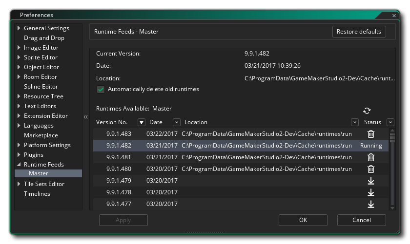

Les préférences de flux d’exécution permettent d’afficher et de modifier les environnements d’exécution actuellement installés, ainsi que les environnements d’exécution actuellement utilisés. GameMaker Studio 2 peut avoir plusieurs outils d'exécution différents installés à la fois et vous pouvez choisir lequel utiliser à partir de cette préférence. Idéalement, vous souhaitez utiliser le runtime le plus récent, mais il peut parfois avoir un problème ou vous pouvez être obligé d’utiliser un ancien pour la comparabilité, etc... et ainsi vous pouvez changer les outils d’exécution que GameMaker Studio 2 utilise pour construire votre jeu ici.
La section initiale de cette préférence est liée à l'endroit où vous extrayez les outils d'exécution et vous demande de saisir une URL dans un flux RSS. Ce flux sera ensuite analysé pour rechercher les mises à jour des outils d'exécution pouvant être téléchargés et installés. Cette section affiche l’URL du flux d’exécution principal par défaut, mais vous pouvez cliquer sur le bouton Ajouter pour créer un nouveau flux d’exécution où vous donnez le nom et l’URL du flux RSS, puis cliquez sur Appliquer pour que GameMaker Studio 2 y accède.. Vous devrez fermer et rouvrir la fenêtre Préférences pour que le nouveau flux soit affiché.
Une fois qu'un flux d'exécution créé, il sera répertorié dans cette section en tant que sous-catégorie et vous devriez toujours avoir au moins un flux répertorié (par défaut, il s'agirait du flux principal). Quel que soit le runtime utilisé, ils auront tous les mêmes fonctionnalités, décrites ci-dessous en prenant comme exemple le flux principal: 
Les préférences de flux d'exécution permettent de sélectionner, d'installer et de désinstaller les différents outils d'exécution. En haut, vous avez les outils d'exécution en cours d'utilisation, la date à laquelle ils ont été créés et l'emplacement où ils sont stockés sur le disque dur. Sous ces détails, vous pouvez trouver une liste de tous les environnements d'exécution disponibles, et vous pouvez choisir n'importe quel élément de cette liste pour qu'il devienne le runtime "en cours d'exécution" utilisé pour la compilation de vos projets.
Pour sélectionner un autre runtime à utiliser, il suffit de le trouver dans la liste, puis de double-cliquer sur  dessus. Si le runtime n'a pas été téléchargé ni installé, vous serez invité à le faire. Une fois installé, vous serez invité à fermer et à redémarrer l'EDI afin que le nouveau runtime puisse être initialisé.
dessus. Si le runtime n'a pas été téléchargé ni installé, vous serez invité à le faire. Une fois installé, vous serez invité à fermer et à redémarrer l'EDI afin que le nouveau runtime puisse être initialisé.
Cette liste d'exécution détaille toutes les exécutions disponibles, leur numéro de version, la date à laquelle elles ont été publiées et, si elles sont installées, le chemin d'accès à l'emplacement où elles ont été installées. Le côté droit montre également les différentes icônes de statut qui sont les suivantes:
| Ceci marque le runtime actuel qui a été sélectionné pour être utilisé lors de la construction de vos projets. | |
| Un clic sur cette option lancera le téléchargement et l'installation du moteur d'exécution sélectionné (une barre d'état apparaît en haut à droite de l'EDI). | |
| En cliquant dessus, le runtime sélectionné sera supprimé de votre disque dur. |
Vous pouvez mettre à jour la liste d'exécution à tout moment à partir du flux RSS donné en cliquant sur le bouton d'actualisation.  .
.